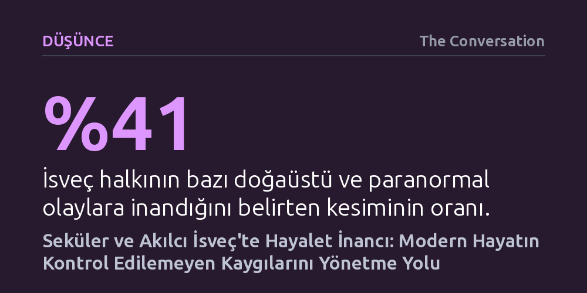

DUSUNCE · The Conversation · 2026-09-12
Nüfusunun yüzde 41'i doğaüstü olaylara inanan seküler İsveç'te hayalet anlatıları, modern bilimden bir kopuşu temsil etmiyor. Aksine İsveçliler, bu deneyimleri akılcı bir yaklaşımla evcilleştirerek modernitenin açıklayamadığı ve kontrol dışı kalan insani korkularla başa çıkma aracına dönüştürüyor.
Sekülerleşme ve bilimsel ilerlemenin doğaüstü inançları yok etmediğini, aksine modern insanın kontrol edemediği varoluşsal kaygılarla baş etmek için bu inançları akılcılaştırarak sürdürdüğünü gösteriyor.

Dışarıdan bakıldığında İsveç; sağlıklı yaşayan bireylerin, pragmatik mühendislerin, sosyal demokrasinin ve ileri düzey sekülerliğin simgesi olarak görülür. Kiliseye gitme alışkanlığının neredeyse terk edildiği ve inançsızlık oranının istisnai düzeyde yüksek olduğu bu toplumda dini pratikler, Noel yemeği hazırlamak ya da çam ağacı süslemek gibi manevi içeriğinden arındırılmış kültürel ritüellere indirgenmiştir. İsveçlilerin kendi ulusal karakterlerini tanımlarken öne çıkardıkları temel vasıflar da bu tabloyu tamamlar: İlerici, çağdaş ve son derece rasyonel.
Ancak bu kusursuz modern vitrinin hemen altında bambaşka bir zihinsel zemin işliyor. Uppsala Üniversitesi'nin araştırmalarına göre İsveç nüfusunun yüzde 41'i en az bir paranormal ya da doğaüstü olguya inandığını açıkça belirtiyor. Sokakta bilime dayalı egzersiz ve beslenme rehberlerini harfiyen uygulayan, batıl inançları terk ettiğini düşünen ortalama bir İsveçli; açıklanamayan sesler, tekinsiz soğukluklar veya hayaletler söz konusu olduğunda rasyonel sınırlarını şaşırtıcı biçimde esnetebiliyor.
Rasyonel bir toplumda hayaletlerin yer bulması yeni bir anomali değil; temelleri 19. yüzyılın sanayileşme dönemine kadar uzanıyor. İsveç fabrikalar ve mühendislikle zenginleşip refah toplumuna adım atarken, eş zamanlı olarak medyumlar, ruh çağırma seansları ve maneviyatçılık da büyük bir yükseliş yaşamıştı. Çünkü endüstriyel dönüşüm ve beraberinde gelen akılcı mekanizmalar, dünyayı sadeleştirmek yerine insan hayatını kavramayı daha karmaşık hale getirdi; bilimsel atılımlar insan olmanın doğasını tek başına açıklayamadı. Aradan geçen 150 yılın ardından hayalet hikâyeleri, İsveçlilerin hayatın getirdiği belirsizliklerle başa çıkma refleksinin vazgeçilmez bir parçası olmayı sürdürüyor.
Üstelik bu inanç, soyut dini dogmalara teslim olmak biçiminde gelişmiyor. Fin folklorist Lauri Honko'nun dikkat çektiği üzere hayaletler, aslında ampirik bir olgu olarak tecrübe ediliyor: Bir tıkırtı duyuluyor, odada ani bir soğukluk hissediliyor ya da göz ucuyla karanlık bir gölge yakalanıyor. Tam da bu duyusal kanıtlar, İsveçlinin pragmatik ve mühendisçe düşünce yapısına hitap ediyor. Soyut mistisizme mesafeli duran zihin, bizzat hissettiği bu somut gariplikleri anlamlandırmak için doğaüstü anlatılara meşru bir alan açıyor.
Doğaüstüne duyulan bu ampirik ilgi, İsveç popüler kültüründe ve özellikle televizyon yapımlarında somut bir karşılık buluyor. Ülkede tam 29 sezon boyunca 318 bölüm yayımlanan ve geniş kitleleri ekran başına toplayan 'Det Okända' (Bilinmeyen) adlı belgesel serisi bunun en belirgin örneği. Sansasyonel Amerikan hayalet avı programlarının aksine bu yapımda medyumlar, sıradan İsveç evlerini ziyaret ederek garip sesleri, açıklanamayan baş ağrılarını ve huzursuz çocukların korkularını mantıksal şablonlara ve rasyonel açıklamalara döküyor.
Programda beliren hayaletlerin yıkıcı ya da karanlık niyetleri bulunmuyor; daha ziyade ev sahiplerinin kontrol edemedikleri gündelik korku ve kaygılarına ayna tutuyorlar. İsveçliler için güvenliğin ve mahremiyetin kalesi sayılan 'ev' mekânı dışarıdan gelen kontrol edilemez bir güçle sarsıldığında, medyumlar devreye girerek bu yabancı unsuru rasyonelleştiriyor ve evi yeniden güvenli kılıyor. Hatta ülkede ölülerle iletişim kurma kurslarının düzenlenmesi, doğaüstünün bir tabu veya kör inanç olarak değil, gündelik hayatı tanzim eden pratik bir meşgale olarak görüldüğünü kanıtlıyor.
Etnolog Åke Daun, İsveç ulusal kimliğini incelerken toplumun temel karakterini "temizlik, sessizlik, çalışkanlık ve modernlik" olarak tarif eder. İsveçliler moderniteden, bilimsel gelişmelerden veya seküler yaşam tarzından ödün vermiyor. Ancak refah devletinin ve rasyonel aklın sunduğu kurallar, insan psikolojisinin kontrol edemediği boşlukları ve kaygıları bütünüyle gidermeye yetmiyor.
Sonuç olarak İsveç'teki hayalet anlatıları, modern hayatın içinde dizginlenemeyen ve açıklanamayan her şeyin simgesi haline geliyor. Toplum bilimi ve aklı terk etmiyor; bilakis bilimin yanıtsız bıraktığı tekinsiz alanları, doğaüstünü adeta mühendisçe bir yaklaşımla evcilleştirip hayatın içine katarak tamamlıyor. Doğaüstü inançlar yok olmuyor; yüksek teknolojiye, bireysel konfora ve rasyonel kültüre kusursuz şekilde uyum sağlayarak yaşamaya devam ediyor.